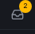
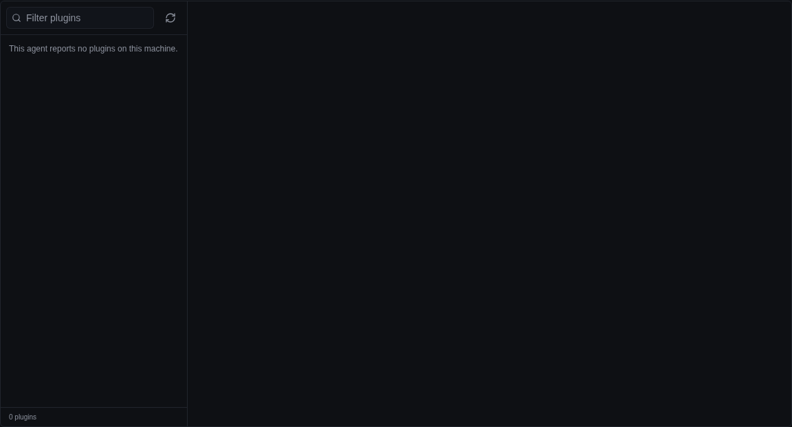
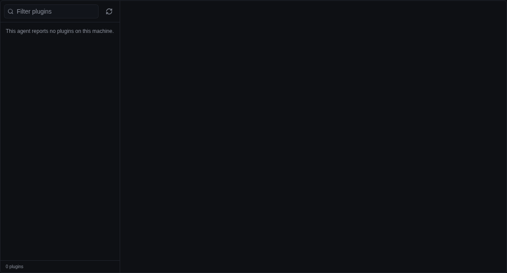
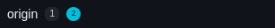
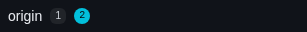
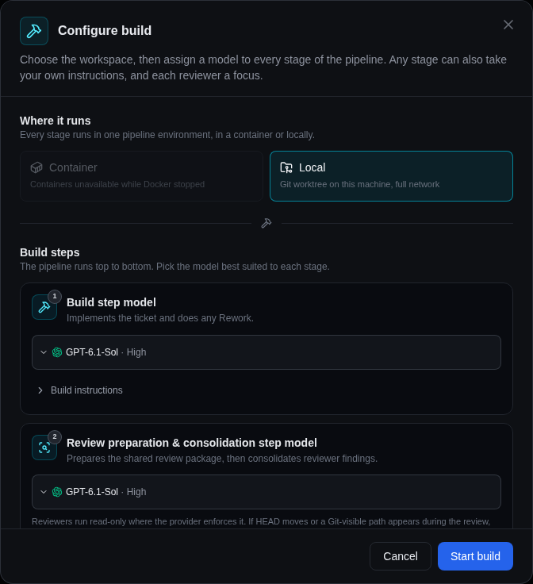

Design tasks / 00010
00010 · Replace 9px badges and counts
Problem
Twelve badges, tags, captions, and icon glyphs in scope used text-[9px], below
the design spec’s smallest text size.
Find the original instances
grep -rnE --include=*.tsx "text-\[9px\]" apps/web/src | grep -v "\.test\."The remaining 9px Linear assignee initials fall outside the scope below.
Scope
| Where | What |
|---|---|
apps/web/src/components/agent-mail/AgentMailButton.tsx:55 |
unread count in an amber pill |
apps/web/src/components/agent-mail/AgentMailPanel.tsx:401 |
mailbox presence tag |
apps/web/src/components/build/BuildLaunchDialog.tsx:709 |
step number badge on a step icon |
apps/web/src/components/review/ReviewLaunchDialog.tsx:90 |
step number badge on a step icon |
apps/web/src/components/design/DesignStyleField.tsx:152 |
tag |
apps/web/src/components/icons/AutoMergeIcon.tsx:22 |
the “A” glyph inside an icon |
apps/web/src/components/kanban/KanbanTaskDialog.tsx:927 |
image filename caption on a thumbnail |
apps/web/src/components/settings/AgentPluginsBrowser.tsx:239,281 |
uppercase tags |
apps/web/src/components/settings/SkillsSettings.tsx:579,631 |
uppercase tags |
apps/web/src/components/sidebar/ProjectGroupHeader.tsx:195 |
count in a cyan pill |
Approach
- Counts and step numbers in filled pills: raise to 10px and widen the pill if needed.
- Uppercase tags and captions: raise to 11px with
tracking-wide. - The AutoMergeIcon glyph is part of an icon; decide whether to redraw it as an SVG path instead of text.
Decisions
One option is marked recommended. Record the option you chose in Notes.
AutoMergeIcon “A” glyph
Required evidence: before and after
Every slot needs a before image (captured first, before editing any code) and an
after image. Use the same profile, fixture data, theme, viewport and zoom for both.
Save PNGs under design/images/00010/ using the exact file names shown. See
How to capture.
Agent mail button with an unread count desktop 1440×900
Deliver agent mail to a fixture session.

Plugins browser with tags desktop 1440×900
Open Settings → Plugins.


Project group header with a count desktop 1440×900
Use a sidebar with grouped projects.


Build launch dialog step badges desktop 1440×900
Open the build launch dialog and capture the numbered steps.

Out of scope
- Larger 10px text (tasks 00008 and 00009).
Verification
mise run test:logged -- --name web-typecheck -- bun run --cwd apps/web typecheck
NODE_ENV=test mise run test:logged -- --name badges -- bun --cwd=apps/web test src/components/agent-mail src/components/settings --parallel=2 --only-failures
mise run format:check
mise run lint
React tests in this repo need NODE_ENV=test in build shells. Real-browser
check: use a throwaway dev:test profile named design-00010, never
a production instance.
Acceptance checklist
-
Before images captured on unmodified code for every slot above, and committed
under
design/images/00010/. - After images captured after the change, with the same profile, data, theme, viewport and file names, and committed beside the before images.
- Every image slot on this page shows a picture (the evidence badge reads “8 / 8”).
- I have looked at each pair and written what changed, and anything that did not change that should have, in Notes.
- Hits were classified in Notes, and each decision above is recorded with the option chosen.
-
Type-check and the owning tests pass (commands above);
mise run format:checkandmise run lintpass. - The browser check includes a page reload and, for layout-affecting changes, the narrow viewport.
- DESIGN.md or PRODUCT.md updated if needed: None expected.
- Status set to Done on this page and in the index.
Notes
Captured in headless Chromium using the isolated design-00010 profile and its
seeded project. Both desktop runs used dark mode, a 1440×900 viewport, and 100% zoom at 1×
pixel density. The baseline was captured before editing the worktree. The title-bar pair was
recaptured with the original and updated renderer source respectively, hiding only the
development profile overlay, which covered the mail button.
Typography by role
- 10px filled pills for the title-bar and project unread counts and the Build and Review step numbers.
-
11px with
tracking-widefor the mailbox presence tag, design style tag, ticket image caption, both plugin status tags, and both skill status tags. - Chose the recommended SVG path for the decorative Auto-merge “A.” It inherits the icon color and scales with the icon. All three callers use the same default icon size. Keeping the text glyph would preserve its exact rendering and retain a 9px text style.
What each pair shows
- The amber Agent Mail pill shows the same two unread messages with a larger 10px numeral.
- The cyan project pill shows the same two unread messages at 10px beside the environment count.
- The Build dialog step numbers are larger at 10px and stay centered in their 16px badges.
- The Plugins browser shows its real empty state in both captures. The isolated backend always returns an empty plugin catalog, so plugin tags are absent in this pair. Both tag styles are set to 11px in the renderer.